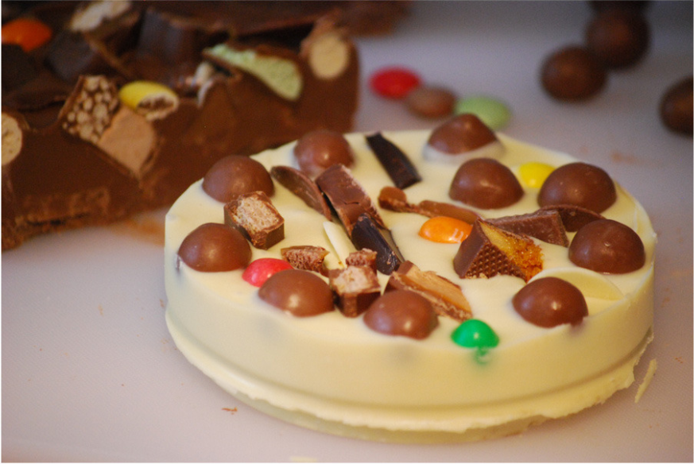

.png?alt=media&token=80eeb1bd-5c73-4efe-99fe-8bff078b04d5)

Chocolate Pizza
POSTED ON 15 DEC 2013/DESSERTS
For the fig-swirl: Melt over medium heat in a saucepan. Add brown sugar and stir it dissolve. Halve all of the figs and toss in the saucepan wit heater and lemon juice. Cook over medium heat, stirring frequently, until you have a chucky jimmy mixture. Add salt with water one or two stirs, set aside and let cool completely.
Ice cream: In a small pot over medium hear, combine milk, and granulated sugar until sugar so completely dissolved and the milk is just barely lukewarm. Whisk in the egg yolks, Set mixture in the fridge and wait until the fig mixture is cooled.
Using ice cream machine, pour liquids into the frozen basin and process according to manufacturer instructions, i.e, let spin and thicken for 20 minutes before adding mascarpone, fig jam mixture , and the nuts. Continue to process for +/- 10minutes. Pour semi-frozen mixture into a Pyrex dish or glass Tupperware. Freeze for at least two hours before serving,


Vanessa Stevenson
Food enthusiastic, phtogrphy fan. Add a pinch or raw foodism and that's
pretty musch who am I